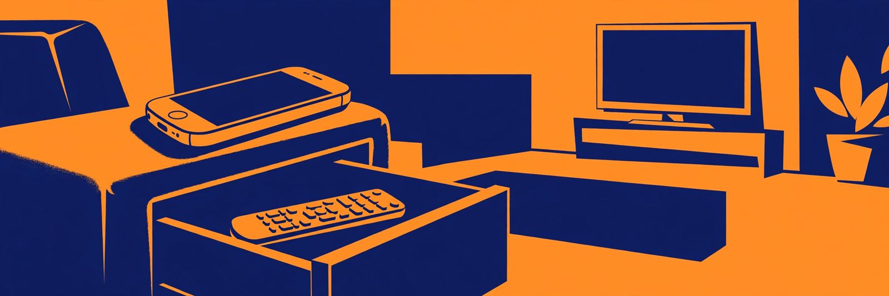

Turn an old phone into the TV remote: IR first, Wi-Fi second, wake limit included

Which remote can a retired phone actually be? That question has a hardware answer, and it splits every drawer phone into one of three groups within about a minute. A phone with a built in infrared blaster can imitate the plastic remote for almost anything in the room, smart or not. A phone without one can still run the television brand network app, if the set is a smart TV. A phone in neither group, paired with a television in neither group, cannot do this job at all, and finding that out in minute one is a better outcome than finding it out after an evening of app installs. The checks come first here, the routes second, and the limits get their own section rather than a footnote.
The 60 second hardware check
- Look for a preinstalled remote app. Open the app drawer and look for an app named Remote, Mi Remote, or Smart Remote that shipped with the phone. Phones from the Xiaomi, Redmi, Poco and realme lines commonly include one when infrared hardware is fitted. No preinstalled remote app is a strong sign the phone has no blaster. Check: app found, or absence noted.
- Look at the top edge. An infrared emitter usually sits on the top edge as a small dark window, easy to miss when nobody has pointed it out. Check: window spotted, or ruled out.
- Confirm against the model specifications. The maker spec sheet for the exact model states whether an infrared emitter is fitted. On Android, the platform itself can answer: the ConsumerIrManager interface includes a check for the hardware, and remote apps built on it will report a missing emitter on open. Check: hardware confirmed present or confirmed absent, from a source stronger than hope.
- Name the television side. Write down whether the set is a smart TV, and which platform it runs, or whether it is an older set that only ever listened to its own remote. Check: one sentence that pairs this phone with this television.
One rule governs the whole check: an app cannot add infrared hardware. A downloaded universal remote app on a phone with no emitter is a picture of a remote, and it will control exactly nothing that needs infrared. That sentence, believed early, is the entire saving this guide offers.
Route A: IR, for anything with a remote
An IR blaster is a small infrared transmitter that sends the same pulses a traditional remote sends. It works with legacy electronics, including older televisions, air conditioners, DVD and Blu ray players, and set top boxes, and it asks for nothing in return: no account, no network setup, no subscription. The phone doing this job is not really a smart device at all. It is a remote with a screen, and its simplicity is the charm.
Setup follows the pattern the preinstalled apps use:
- Open the remote app and add a device. Tap Add remote, choose TV, then pick the brand. Check: the brand test screen appears.
- Aim the top edge at the television and test the buttons. The app offers candidate code sets; confirm power or volume on the real set before saving. Working range is about 8 metres, with a clear line of sight. Check: the television responds to the phone, not just to optimism.
- Repeat for the rest of the stack. Add the soundbar, the player, and the air conditioner, each as its own remote inside the same app. Check: every device in the room answers from the one phone.
Infrared carries two honest limits. Commands travel one way, so the phone never learns whether the television received them; the screen in front of the viewer is the only confirmation. And line of sight is physics, not a setting: no control from another room, and no control through a cabinet door.
Route B: the brand Wi-Fi app, for smart sets
Network control covers the territory infrared cannot reach. Launching apps, searching, voice control, and reading device state all live in the software layer of a modern smart TV, and only a network app can touch them. The routes are brand specific:
| Television | Phone route | Conditions |
|---|---|---|
| Android TV or Google TV set | Google TV app over Wi-Fi | Phone and television on the same network; pairing by a code shown on the television |
| Chromecast with Google TV or Google TV Streamer | Google Home or Google TV app | Same network; the route varies by Chromecast generation, so confirm the exact model |
| Compatible Samsung television or projector | SmartThings app | Samsung specific; documented controls include volume, launching apps, and changing inputs |
| Older or non smart set | No Wi-Fi route exists | Route A or the original remote; a network app cannot speak to a set with no network |
The two conditions repeat across every brand. The phone and the television must share a network, which is a separate requirement from infrared and easy to break by parking the phone on a guest network. And the television must already be on, or resting in a standby mode that keeps Wi-Fi alive, because most Wi-Fi apps cannot wake a fully powered off set. Keep that second condition in view; it decides how the permanent setup below gets arranged.
Set it up as a permanent remote
A phone tested once and returned to the drawer is a party trick. A phone stripped to one job and parked beside the couch is equipment.
- Reset the phone to the job. Remove accounts and apps the remote role does not need, leaving the remote app, the brand app where Route B applies, and nothing competing for the home screen. Check: one tap from wake to a working remote.
- Fix its network identity. Join the phone to the same home network as the television, the main network, not the guest one, and leave Wi-Fi on permanently. Check: the brand app finds the television after the phone has slept overnight.
- Park it on power. Give the phone a permanent charging spot at the couch end of the room. A remote that is dead is a coaster. Check: the phone lives in one place, charged, the way the plastic remotes never managed.
- Label the division of labour. Decide which remote handles power. If the set needs its original remote or the IR route to wake, keep that one action assigned, and let the phone run everything after wake: volume, inputs, apps, playback. Check: every household member can get from off to watching without a search party.
What success looks like: the phone sits charged in its spot, opens straight to remote controls, drives every device in the stack, and the only remote ever hunted for is the one that got retired.
The limits, stated plainly
Three limits survive every setup. A Wi-Fi remote generally cannot turn a fully off television on, so the wake action may stay with the original remote or with infrared where the phone has it. Infrared needs line of sight at about 8 metres and offers no confirmation beyond watching the set respond. And app support varies by exact model on both sides of the pairing and changes over time, so a combination that works this winter deserves a retest after any television firmware update rather than blind trust. None of these limits cancels the project. A free phone that handles volume, inputs, apps and playback for every device in the room, from a permanent spot, with its limits written down, beats a universal remote purchase for most rooms, and it beats a drawer for every phone.
— Dex Carter, Tech Writer